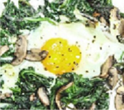

Spinat-Ei-Pfanne
Zubereitungszeit: 30min
Ergibt: 2 große Portionen

- 250g Spinat
- 100g Champignons
- 3-4 Eier
- 1 EL Öl
- Salz, Pfeffer
- Gemüse waschen und klein schneiden, Champignons mit Öl anbraten, dann zur Seite stellen
- Spinat mit 2 EL Wasser in die Pfanne geben, 5-8 min köcheln lassen
- Überschüssiges Wasser abgießen, Champignons in die Pfanne geben, it Salz und Pfeffer würzen
- 3-4 Mulden in den Spinat schiben und dort die Eier hineinschlagen, gewürfelte Tomaten in der Pfanne verteilen und 5-7 min bei mittlerer Hitze kochen, bis die Eier die gewünschte Konsistenz haben